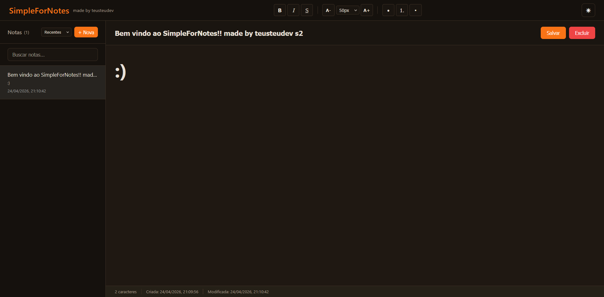

Write in seconds, find anything with a quick search, and give your team one place to stay aligned—at your desk or between meetings.
30-day trial · No credit card · Up and running in minutes

Capture, organize, and share in one place—without turning note-taking into its own project.
Tags and suggestions that adapt to how you work, so the note you need shows up when you need it—not after a dozen searches.
Co-edit with your team, see changes as they land, and decide in the doc—so you spend less time in status meetings and more time moving work forward.
Drop in images, video, and files next to your ideas—so the full story lives in one page, not scattered across threads and attachments.
Start on your phone, finish on your laptop. Edits save automatically and follow you everywhere—one workspace that feels like a single device.
Three straightforward steps—no IT ticket, no week-long onboarding.
Use your work email and you're in. No credit card to start—your 30-day trial includes every premium feature from day one.
Dump ideas fast, then shape them into notebooks and tags. Smart suggestions help you keep structure without babysitting folders.
Invite teammates, set permissions on notebooks or single notes, and watch edits roll in live—everyone stays on the same version, by default.
When you're thinking, the tool should feel invisible. When you're under pressure, it should surface what you wrote last week without a scavenger hunt. That's the balance we design for.
What teams say after they make SimpleForNotes their default workspace
"The suggestions actually save me time—not a gimmick. I pull up old decisions in seconds, and the UI never gets in my head. I wouldn't go back to my old stack."
"We stopped losing context between chat and docs. One shared space, edits in real time, and we shipped our biggest release without the usual scramble."
"I draft on my commute and polish at my desk. Sync has been rock-solid—it feels like one device, not three. Best money we spent on tooling this year."
Try SimpleForNotes free for 30 days—every premium feature included. No credit card to start. Cancel anytime if it's not a fit.